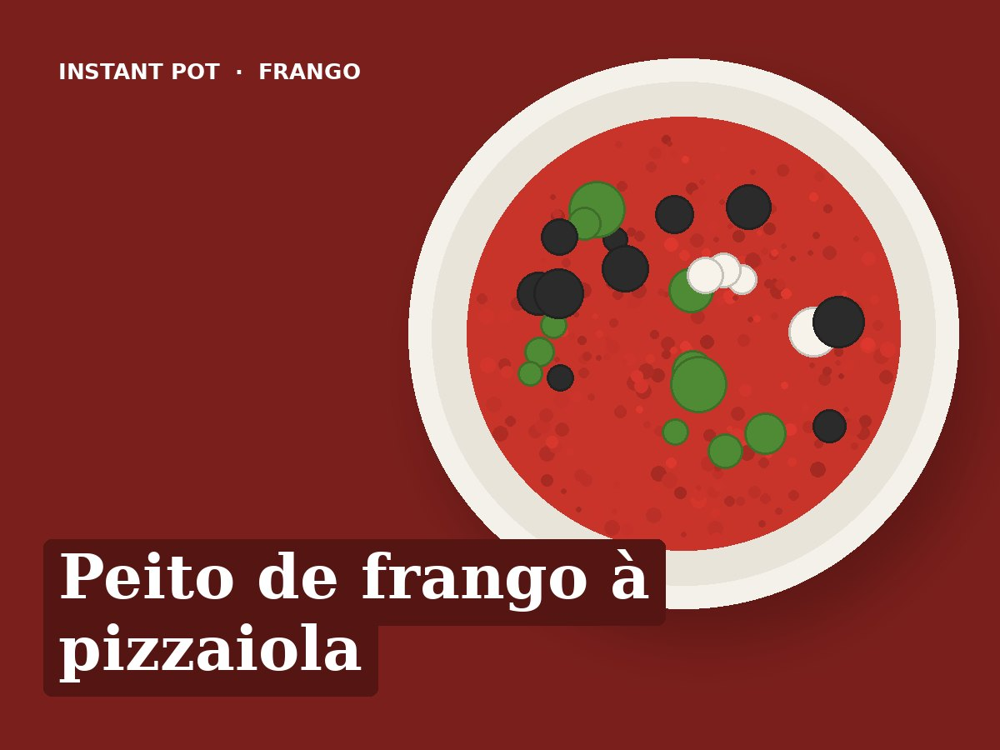

Peito de frango à pizzaiola
Ingredientes
- 600 g de peito de frango (3 filetes grossos)
- 400 g de tomate pelado triturado
- 2 dentes de alho laminados
- 100 ml de água
- 50 g de azeitonas pretas
- 125 g de mozzarella fresca às fatias
- 1 colher de chá de orégãos
- Manjericão fresco
- 1 colher de sopa de azeite
- Sal e pimenta q.b.
Preparação
- Saltear: aquecer o azeite e alourar os filetes temperados com sal e pimenta, 2 minutos de cada lado. Retirar.
- Juntar o alho, 1 minuto. Deitar a água e raspar bem o fundo.
- Voltar a pôr o frango. Por cima o tomate, as azeitonas e os orégãos, sem mexer.
- Pressão alta, 8 minutos. Libertação natural 5 minutos.
- Pôr a mozzarella por cima do frango e fechar a tampa, sem ligar, 3 a 4 minutos até derreter.
- Servir com manjericão, acompanhado de salada, arroz ou massa.